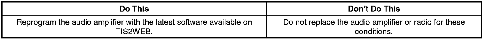
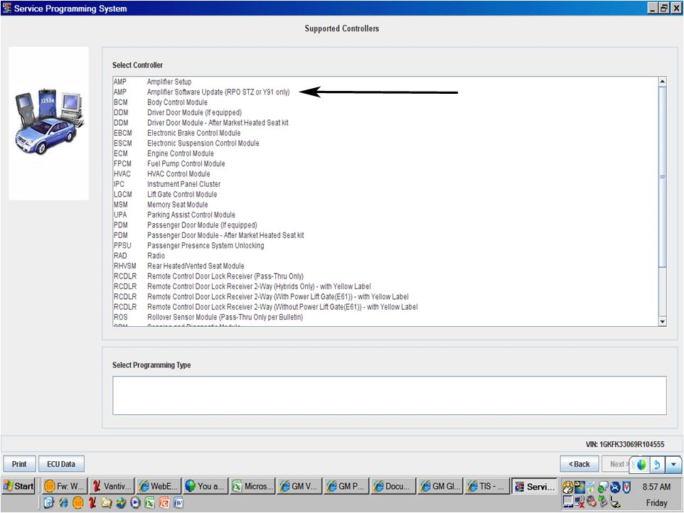
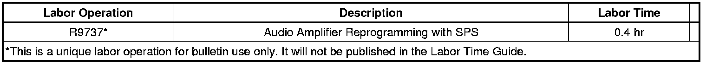

Audio System - No Audio/Door Chime/Turn Signal Indicator
TECHNICALBulletin No.: 08-08-44-031A
Date: March 24, 2009
Subject:
No Audio from Radio, Door Ajar Chime and Turn Signal Click Clack Inoperative During a Key Cycle - Audio Returns After Vehicle is Turned Off For Several Minutes (Reprogram Audio Amplifier)
Models:
2008-2009 Cadillac CTS, Escalade Models, SRX
2009 Chevrolet Avalanche, Tahoe, Suburban LTZ
2008-2009 GMC Sierra Denali, Yukon Denali Models
2009 GMC Yukon, Yukon XL
2008-2009 HUMMER H2 Models
with Luxury Edition Package (RPO Y91) or Premium Audio Speaker System with Surround Amplifier (RPO UQS)
Attention:
This bulletin only applies to vehicles with amplifier part numbers 25921142, 25924299, 25926541, 25939528 and 25939529.
Supercede:
This bulletin is being revised to update models, model years and the service procedure. Please discard Corporate Bulletin Number 08-08-44-031 (Section 08 -- Body and Accessories).
Condition
Some customers may comment on the following concerns during a key cycle. The audio returns after the vehicle is turned off for several minutes (10 minutes or more). This allows the amplifier to shut down completely and reset.
- No audio from the radio.
- Door ajar chime inoperative.
- Turn signal click clack sound inoperative.
Cause
These conditions may be caused by a software anomaly.
Correction


A revised calibration has been developed to address these conditions. Technicians are to reprogram the audio amplifier using TIS2WEB and selecting " Amplifier Software Update (RPO STZ or Y91 only)". Refer to the Audio Amplifier Programming and Setup procedure in SI for more information. As always, make sure your Tech 2(R) is updated with the latest software version.
Warranty Information

For vehicles repaired under warranty, use the table above.

Disclaimer